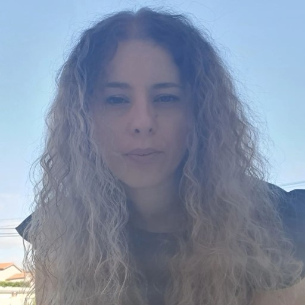

Autobiografia
Chamo-me Patrícia Sousa e nasci a 2 de Setembro de 1989, na cidade de Viseu. Sou mãe de uma menina, que é tudo o que me faz feliz. Tive uma educação tradicional, dentro dos valores católicos e guardo boas memórias de infância. Considero-me uma pessoa dinâmica e responsável e gosto de organização e método. Procuro sempre aprender mais e saber melhor.
Concluí o curso científico e humanístico de ciências e tecnologias em 2007 (12º ano) e ingressei em Engenharia Informática, no Instituto Politécnico de Viseu, mas não concluí. Tenho diversas certificações no âmbito das terapias alternativas – como o Reiki e fiz formação em contexto de trabalho, nomeadamente, no atendimento ao cliente, técnicas de qualidade e produção e em conceitos de optometria e contatologia.
Em 2022, decidi mudar a minha carreira profissional e resolvi inscrever-me no curso técnico de informática – sistemas, nível IV, que terminei em 2023. Realizei o meu estágio curricular na empresa Fidizzi, onde desenvolvi competências em Salesforce, nomeadamente administração, automatização de processos e desenvolvimento, na linguagem de programação APEX.
Relativamente ao meu percurso profissional, comecei a trabalhar ao 16 anos, num projeto de verão. Desde então passei por diversos locais de trabalho, como restauração e lojas de roupa. Trabalhei numa fábrica, como ajudante de técnica de qualidade e o meu último emprego sucedeu-se na empresa Multiopticas, como operadora comercial de ótica, durante sensivelmente 6 anos.
Acredito que a informática nasceu para ajudar a humanidade a evoluir, visto que ela é o resultado do desenvolvimento da ciência, do avanço da tecnologia e da aplicação da engenharia. Procuro desenvolver mais competências no âmbito da programação. Tenho como objetivo pessoal concluir a licenciatura em Engenharia Informática.
Vejo-me no futuro, em termos profissionais, a desenvolver software e a transmitir conhecimentos, no âmbito da formação.